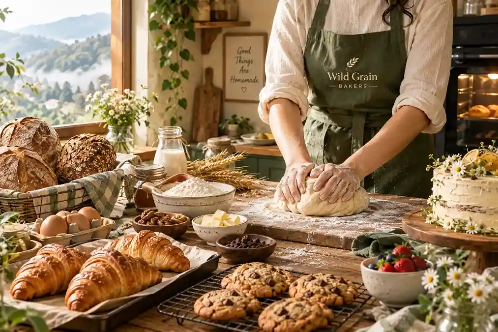
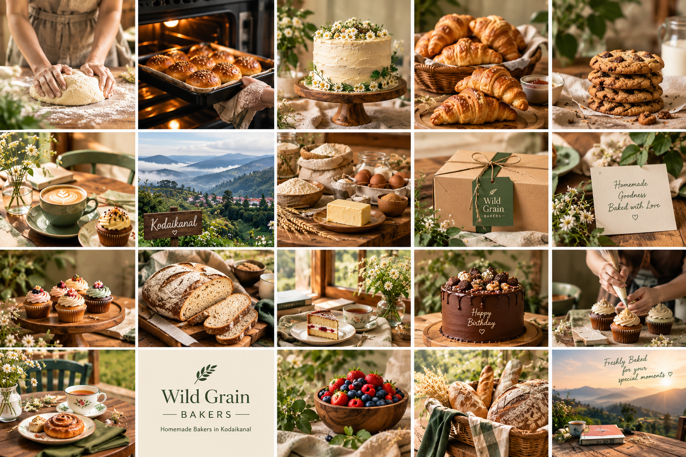

Wild Grain – Homemade Bakers in Kodaikanal
Homemade Goodness, Baked with Heart in Kodaikanal
At Wild Grain, we bring the warmth of homemade baking to Kodaikanal with freshly crafted treats made in small batches and with genuine care. Our home bakers focus on thoughtful recipes, quality ingredients, and flavours that make every bite feel comforting and memorable.
From beautifully baked favourites to indulgent flavoured treats, every creation is prepared with the simplicity and personal touch that makes homemade food special. Whether you are celebrating a birthday, sharing a quiet moment with family, or simply craving something freshly baked, Wild Grain adds a little sweetness to the occasion.
Inspired by the charm of Kodaikanal and the growing appreciation for homemade food across India, we believe great baking does not need to feel complicated. It should feel warm, personal, and made especially for you.
Wild Grain — bringing the comfort of home baking to every memorable moment.
Book Your Order
Tell us what you're craving and we'll get back to you.
About Us
Baked with Love, Crafted with Passion
Welcome to Wild Grain Bakehouse, where every bake is made with care, creativity, and a love for the simple joy of good food.
We believe that the best bakery experiences begin with quality ingredients, thoughtful recipes, and a little bit of heart. From freshly baked breads and delicate pastries to indulgent cakes and delightful treats, each creation is carefully handcrafted to bring warmth and happiness to every bite.
Inspired by the beauty of homemade baking and the charm of artisan craftsmanship, Wild Grain Bakehouse brings together comforting flavours, beautiful presentation, and timeless baking traditions.
Whether you're celebrating a special moment, sharing something sweet with loved ones, or simply treating yourself, we're here to make every occasion a little more delicious.
Wild Grain Bakehouse — where every bite is made with love.

Why Choose Us?
Homemade baking with quality ingredients, creative flavours, and a personal touch in every bite.
Truly Homemade
At Wild Grain, our bakes are prepared with the warmth and personal touch of homemade baking. Every recipe is thoughtfully made to bring you comforting flavours and a fresh-from-the-kitchen experience.
Freshly Made with Care
We believe good baking begins with quality ingredients and careful preparation. Our homemade bakers give attention to every detail, creating treats that are fresh, delicious, and made with genuine care.
Made for Every Occasion
Whether you are celebrating a birthday, enjoying a family gathering, or simply treating yourself, our bakes are created to make everyday moments feel special.
A Love for Creative Flavours
From familiar favourites to exciting flavoured creations, we enjoy bringing variety to the table. Our approach combines simple homemade goodness with ideas inspired by modern tastes.
Inspired by Kodaikanal
Being a local baking business in Kodaikanal, we understand the charm of sharing freshly made food in a beautiful hill-town setting. Our goal is to make every order feel personal, warm, and memorable.
Baked with Heart
For us, baking is more than a business. It is about creating something that brings people together. At Wild Grain, every bake carries a little piece of our passion, care, and love for homemade food.
